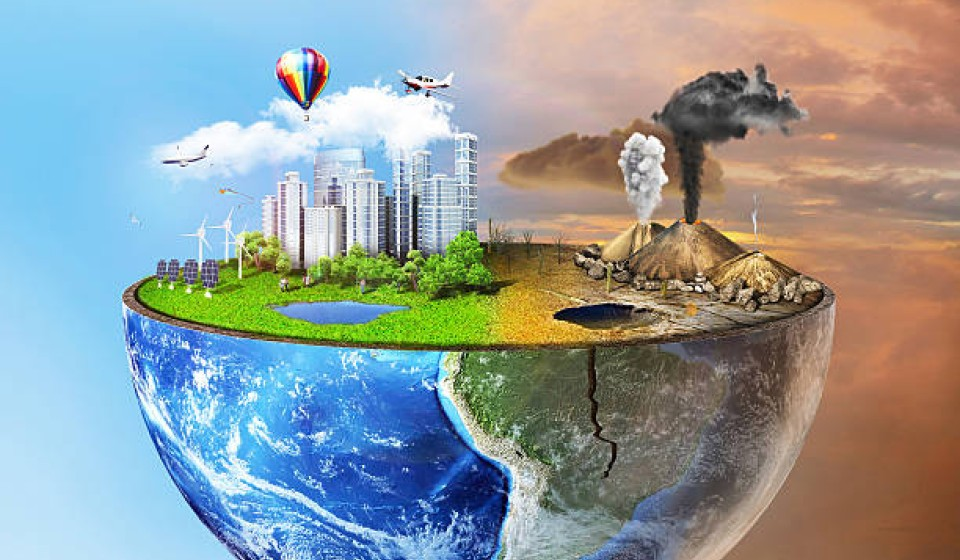

Environment All living things that live on this earth comes under the environment. Whether they live on land or water they are part of the environment. The environment also includes air, water, sunlight, plants, animals, etc. Moreover, the earth is considered the only planet in the universe that supports life. The environment can be understood as a blanket that keeps life on the planet sage and sound.
Importance of Environment We truly cannot understand the real worth of the environment. But we can estimate some of its importance that can help us understand its importance. It plays a vital role in keeping living things healthy in the environment. Likewise, it maintains the ecological balance that will keep check of life on earth. It provides food, shelter, air, and fulfills all the human needs whether big or small. Moreover, the entire life support of humans depends wholly on the environmental factors. In addition, it also helps in maintaining various life cycles on earth. Most importantly, our environment is the source of natural beauty and is necessary for maintaining physical and mental health. Benefits of the Environment The environment gives us countless benefits that we can’t repay our entire life. As they are connected with the forest, trees, animals, water, and air. The forest and trees filter the air and absorb harmful gases. Plants purify water, reduce the chances of flood maintain natural balance and many others. Moreover, the environment keeps a close check on the environment and its functioning, It regulates the vital systems that are essential for the ecosystem. Besides, it maintains the culture and quality of life on earth. The environment regulates various natural cycles that happen daily. These cycles help in maintaining the natural balance between living things and the environment. Disturbance of these things can ultimately affect the life cycle of humans and other living beings. The environment has helped us and other living beings to flourish and grow from thousands of years. The environment provides us fertile land, water, air, livestock and many essential things for survival. Cause of Environmental Degradation Human activities are the major cause of environmental degradation because most of the activity’s humans do harm the environment in some way. The activities of humans that causes environmental degradation is pollution, defective environmental policies, chemicals, greenhouse gases, global warming, ozone depletion, etc. All these affect the environment badly. Besides, these the overuse of natural resources will create a situation in the future there will be no resources for consumption. And the most basic necessity of living air will get so polluted that humans have to use bottled oxygen for breathing. Above all, increasing human activity is exerting more pressure on the surface of the earth which is causing many disasters in an unnatural form. Also, we are using the natural resources at a pace that within a few years they will vanish from the earth. To conclude, we can say that it is the environment that is keeping us alive. Without the blanket of environment, we won’t be able to survive. Moreover, the environment’s contribution to life cannot be repaid. Besides, still what the environment has done for us, in return we only have damaged and degraded it.Importance of Environment We truly cannot understand the real worth of the environment. But we can estimate some of its importance that can help us understand its importance. It plays a vital role in keeping living things healthy in the environment. Likewise, it maintains the ecological balance that will keep check of life on earth. It provides food, shelter, air, and fulfills all the human needs whether big or small. Moreover, the entire life support of humans depends wholly on the environmental factors. In addition, it also helps in maintaining various life cycles on earth. Most importantly, our environment is the source of natural beauty and is necessary for maintaining physical and mental health. Benefits of the Environment The environment gives us countless benefits that we can’t repay our entire life. As they are connected with the forest, trees, animals, water, and air. The forest and trees filter the air and absorb harmful gases. Plants purify water, reduce the chances of flood maintain natural balance and many others. Moreover, the environment keeps a close check on the environment and its functioning, It regulates the vital systems that are essential for the ecosystem. Besides, it maintains the culture and quality of life on earth. The environment regulates various natural cycles that happen daily. These cycles help in maintaining the natural balance between living things and the environment. Disturbance of these things can ultimately affect the life cycle of humans and other living beings. The environment has helped us and other living beings to flourish and grow from thousands of years. The environment provides us fertile land, water, air, livestock and many essential things for survival. Cause of Environmental Degradation Human activities are the major cause of environmental degradation because most of the activity’s humans do harm the environment in some way. The activities of humans that causes environmental degradation is pollution, defective environmental policies, chemicals, greenhouse gases, global warming, ozone depletion, etc. All these affect the environment badly. Besides, these the overuse of natural resources will create a situation in the future there will be no resources for consumption. And the most basic necessity of living air will get so polluted that humans have to use bottled oxygen for breathing. Above all, increasing human activity is exerting more pressure on the surface of the earth which is causing many disasters in an unnatural form. Also, we are using the natural resources at a pace that within a few years they will vanish from the earth. To conclude, we can say that it is the environment that is keeping us alive. Without the blanket of environment, we won’t be able to survive. Moreover, the environment’s contribution to life cannot be repaid. Besides, still what the environment has done for us, in return we only have damaged and degraded it.